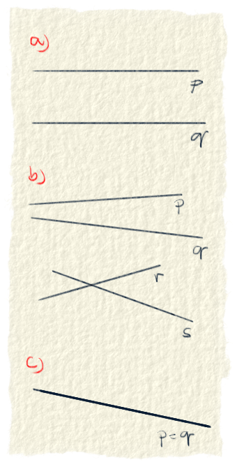
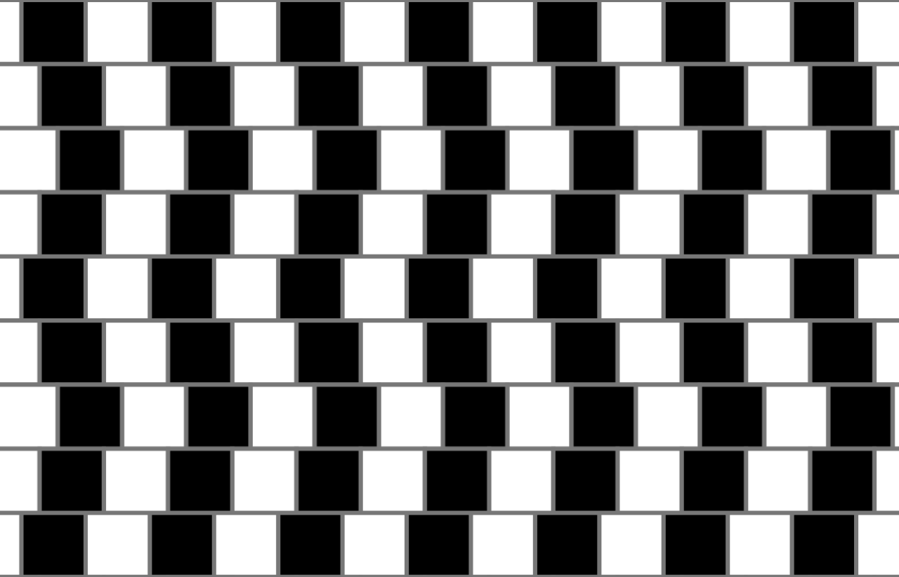
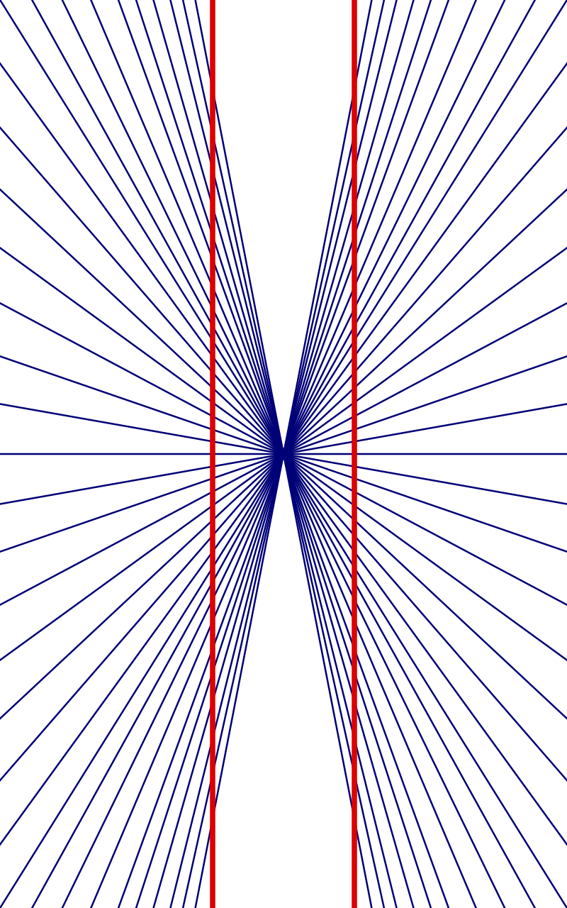
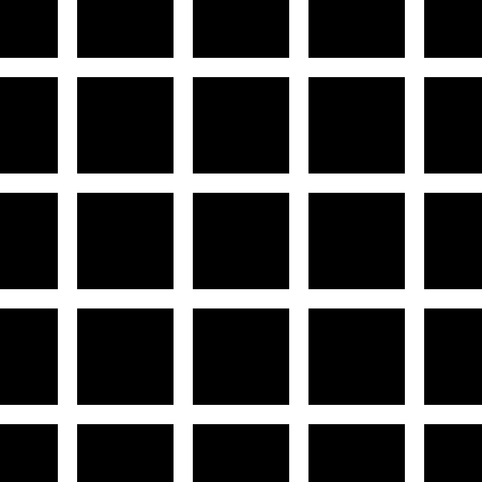
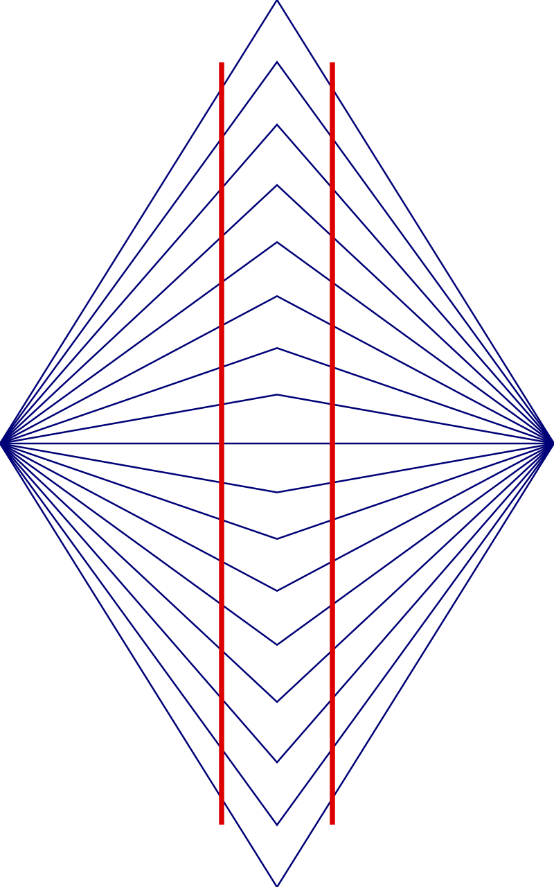
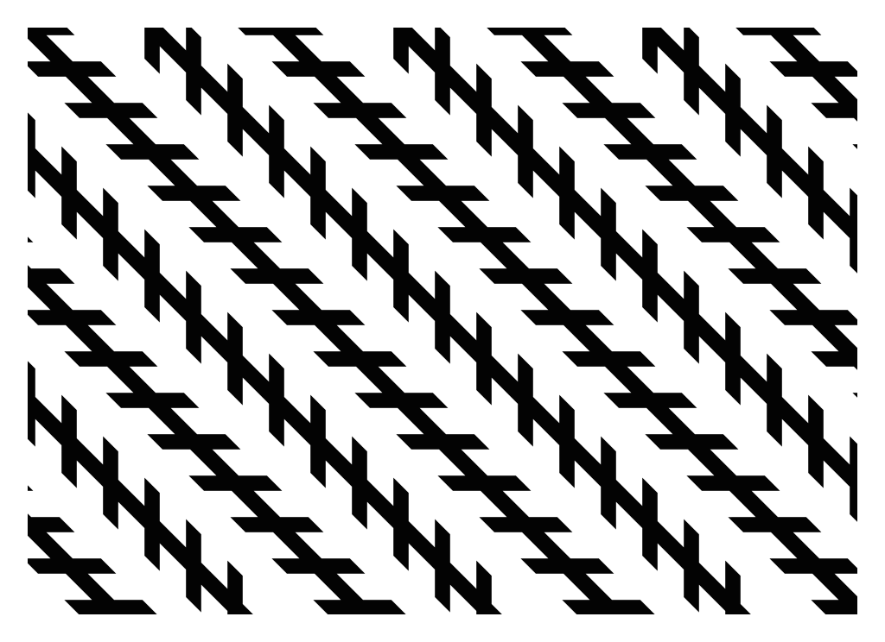

Rovnú čiaru idúcu od nekonečna po nekonečno pozná každý z nás. Je to priamka. Z matematického hľadiska vieme o priamke teda povedať, že nemá začiatok ani koniec, je jednorozmerná a je dokonale rovná. Označujeme ju malými písmenami, zvyčajne okolo písmena p, napr. p, q, r, s...
Každé dva body, ktoré si vyberieme, sa dajú spojiť jednou priamkou. Je to najkratšia vzdialenosť medzi nimi. Napríklad z Malaciek do Rimavskej Soboty je to vzdušnou čiarou (po priamke) 221 km. Po cestách musí auto prejsť 314 km. Keby vedelo lietať, cestu si skráti skoro o 100 km. No a cez každé dva body ide práve iba jedna priamka. Môžeme povedať, že priamka je daná dvomi bodmi.
Vzájomná poloha priamok
Priamky môžu byť rovnobežné, rôznobežné a totožné. Rovnobežné primaky sa nikde nepretnú. Z toho vyplýva, že nemajú žiaden bod spoločný. Rôznobežné priamky idú každá iným smerom a niekde sa pretnú v jednom bode. Majú teda spoločný iba jeden bod. Totožné priamky ležia na sebe a kvôli tomu majú všetky body spoločné.

Obr. 1.: Rovnobežnosť priamok. Na prvom obrázku a) sú rovnobežné priamky. Ani jeden bod nemajú spoločný. Na obrázku b) sú všetky štyri priamky rôznobežné. U nás na papiery sa síce nepretínajú, ale keďže sú nekonečne dlhé, tak sa niekde pretnú určite. Totožné priamky sú na obrázku c). Majú všetky body rovnaké.
Využitie priamok
Priamky vieme použiť na rôzne skvelé veci a jednou z nich sú určite optické ilúzie.

Obr. 2.: Cafe Wall[1]: aj tebe sa zdá, že tie vodorovné čiary sú krivé?Obr. 3.: Ehrensteinova ilúzia[1]: vidíš tam tie biele kruhy, že?

Obr. 4.: Heringova ilúzia[1]: tie červené čiary sú krivé, či nie?

Obr. 5.: Hermannova mriežka[1]: sú šedé štvorčeky na miestach, kde sa pretínajú biele čiary?Obr. 6.:Muller-Lyer ilúzia[1]: ktorá z týchto čiar je najdlhšia? Tá stredná? Určite?

Obr. 7.: Wundtova ilúzia[1]: sú červené čiary opäť krivé?

Obr. 8.: Zollnerova ilúzia[1]: sú tie dlhé čierne čiary rovnobežné?
Priamky sa samozrejme dajú použiť aj inak. Študenti technických odborov o tom vedia svoje. Toto využitie je však jedno z tých krajších. Len tak pre zaujímavosť, spýtaj sa kamarátov či vidia veci v ilúziach rovnako ako ty ;).
Zdroje
[1] Wikipedia. 2021. List of optical illusions. https://en.wikipedia.org/wiki/List_of_optical_illusions